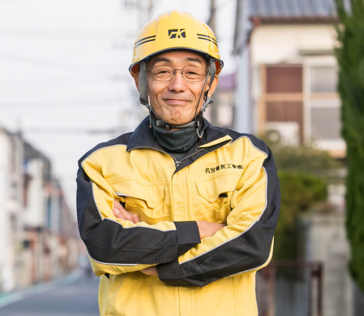
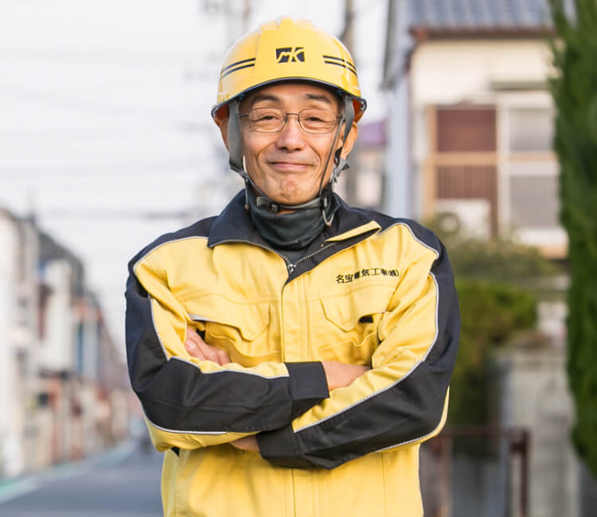

頼もしく、面倒見のよい先輩社員の皆さまに、やりがいや目標などについて語っていただきました。
末長く、安定して働き続けられる会社です。
頼もしく、面倒見のよい先輩社員の皆さまに、
やりがいや目標などについて語っていただきました。
末長く、安定して働き続けられる会社です。
 

社員インタビュー 01
伝えたいこと、
伝えるべきことが、ある。
この仕事に携わって約40年。その間、様々な仕事や人を見てきました。情報社会が進み、色々なことが電子化されていく中で、仕事の管理の仕方や技術レベルの向上など、時代の流れと共に常に変化してきました。
そして今も、変化・進化し続けています。しかし、どんなに時代が変わっても、私たちがすべき仕事は変わっていくことはありません。“電気工事人”としての知識やスキルは、現場で経験を積んで身につけていくしかないのです。
そのために、次の世代へ伝えていきたいこと、伝えていかなければならないことが沢山あります。そして、それを継承していくことが、長い期間業界を知っている自分だからこその使命だと感じています。
私は、新人にはいつも「この業界で腰を据えて頑張るには、最低3〜5年は修行期間だ」と言っています。キツいことも沢山あると思いますが、そこを乗り越えれば、仕事人としてはもちろん、一人の人間として自信を持って前へ進んでいくことができるはずです。
安全第一の仕事なので時には強い口調になることもありますが、それは仲間を思うからこそ。ここにいるスタッフは、みんなファミリーなのです。電気工事業界の中に数多ある工事会社の中で、名宝電気工事で働く意味やそのスピリットを、子や孫、またその次の世代まで受け継いでいきたいと思っています。
- 主な保有資格：
- ・一級施工管理技士免許 ・第一種電気工事士免許 ・高所作業車運転技能
社員インタビュー 02
現場に一番深く関わる、
責任感と達成感。
前にいた会社も、同じ電気工事業界でしたが、工場系のみを専門に施工する会社だったので、それ以外の物件を手がけたことがない私にとって、いろんな物件を扱う当社のスタイルはすごく新鮮でした。同じ分野でも、全く新しいことを始める感覚があり、戸惑いながらもワクワク感でいっぱいだったことを覚えています。
今は、大型注文住宅をメインに担当しているのですが、何もないところから一つの物件を完成させていく責任感と楽しさを実感しています。
その仕事の始まりは、本工事に入る前から。現場事務所や工事現場用電源を仮設し、その電気を配置することからスタートするのです。そして、物件が完成し、仮設事務所を撤去するまで、どの工事屋さんよりも一番深く現場と関わるのが電気工事なんですよね。その一部始終を見ているから、完成した時の達成感はひとしおです。
以前、関わった物件の中で、竣工間近になって、大元の漏電が発覚したことがありました。「竣工時期を遅らせるわけにはいかない」という思いで一人躍起になっていたところ、担当ではない他のスタッフも休み返上でトラブル解決に協力してくれ、なんとか間に合わせることができました。
こうした時に、信頼できる仲間がいること、チームとして仕事ができることは本当に心強く、今後に残していきたい当社の魅力ある風土の一つだと思っています。
- 主な保有資格：
-
・第一種電気工事士免許
・高所作業車運転技能
社員インタビュー 03
生涯、現場主義。
成長に終わりはない。
「資格を取って、しっかりと手に職をつけた仕事がしたい」という思いから、この世界に飛び込みました。正直、電気工事に特別興味があったわけではないのですが、仕事を始めてみると、一から覚えていくことの楽しさと日々できることが増えていくことの達成感でいっぱいでした。
とはいえ、体力的にも技術的にもきつい仕事ではあります。上司からも「最低3年は修行だ」と言われていたのでその覚悟ではいましたが、ふと「辞めたい」と魔がさす時もありました。でも、やっぱり中途半端で終わりたくなかった。とにかく、「一人前と認めてもらえるようになるまでは辞められない」という一心で、毎日必死で食らいついていきました。
そして、気づいたらもう17年。仕事を始めた当初は、上司が言っていたように、3年経てば自分でも一人前になったと自覚できると思っていました。もちろん、一通りの仕事はこなせるようになりましたし、お客様からの無理難題にも工夫を凝らして自力で対処できるようにもなりました。
でも、未だにいっぱいいっぱい。先輩たちのように、もっと余裕を持って働けるようになりたいと思う反面、こうしてまだまだ毎日成長していける自分がすごく楽しみだったりもしています。
これから、後輩の指導や監理の仕事も増えていくと思いますが、いつまでも現場で、常に勉強しながら成長し続けていける人間でありたいと思っています。
- 主な保有資格：
-
・第二種電気工事士免許
・高所作業車運転技能
社員インタビュー 04
その時々のスキル、立場で、
できることを全力で。
私が当社への入社を決めたポイントは大きく分けて3つ。まず、待遇面での条件が良かったこと。「休みが少なく、給料が安い」という同業他社が多い中で、「きっちり休めて、しっかりボーナスもある」当社は、とても画期的だな、と思いました。そして、そうした福利厚生面は年々見直されています。
2つ目は、仕事の幅が広いこと。当社では、個人住宅から集合住宅や商業施設、工場や公共施設などいろんな物件を手がけることができます。一つの分野に特化している企業が多い中で、こうした守備範囲の広さも名宝電気工事の特徴の一つだと思います。そして、
3つ目は、自由に仕事ができること。しっかりとスケジュール管理ができていれば、仕事の進め方は個人の裁量に任せられています。
もちろん、スキルや経験が浅い時期は先輩方がしっかりフォローしてくださいますが、だからと言って言われたことを淡々とやるのではなく、その時々の立場で思ったことや意見を言える環境が整っています。
時には我慢も必要ですが、基本的にはみんなに優しい会社ですね。社内には常に笑顔や笑いがあふれ、入社当時から変わらないこのアットホームな雰囲気が私は大好きです。今度も、常に初心を忘れず、そして技術力も人間力もどんどん磨き、会社に利益を上げていけるキーマンとして、貢献していきたいですね。
- 主な保有資格：
-
・第二種電気工事士免許
・高所作業車運転技能
お問い合わせ
CONTACT
受付：平日 9:00〜17:00